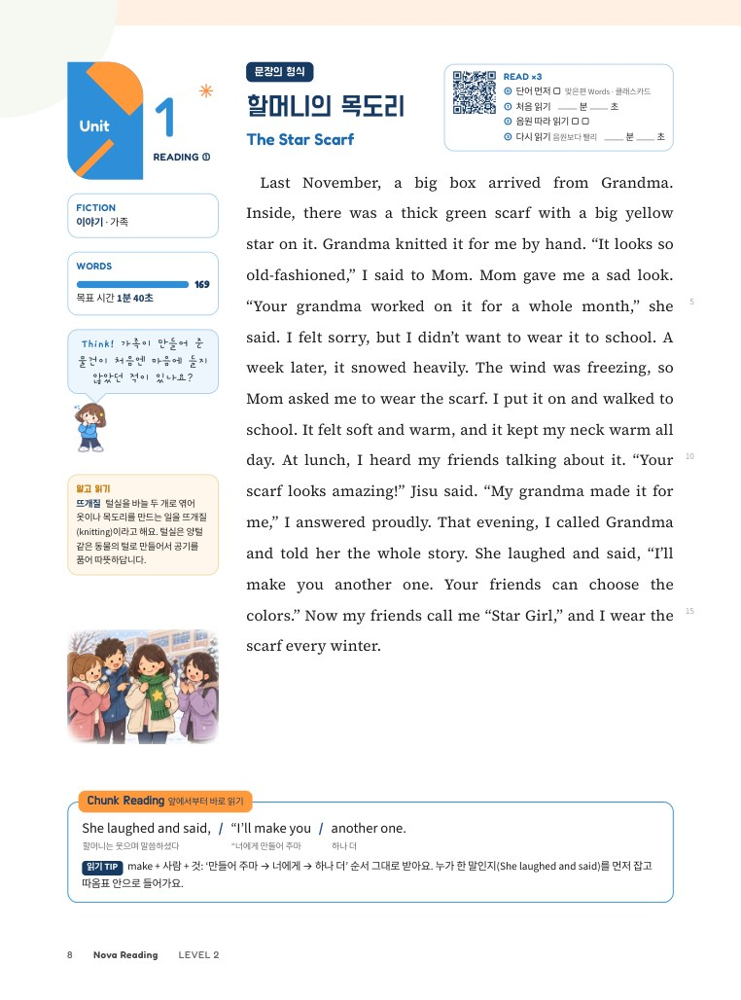
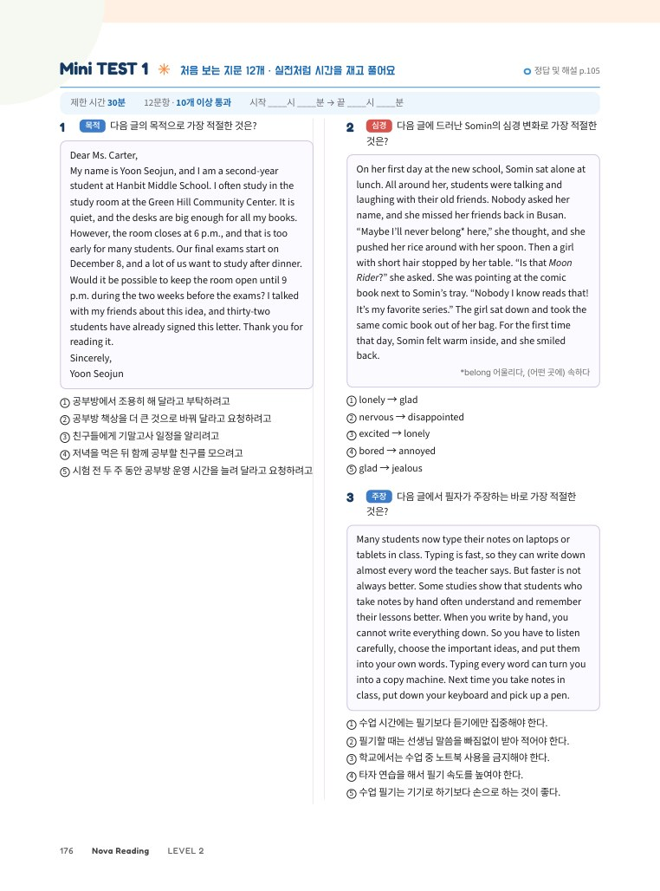

영어 독해 · 구문부터 수능 유형까지
NovaReading
LEVEL2
표시 없이, 앞에서부터 바로 읽는 독해
지문 36편 · 수능 유형 문제Chunk Reading · 구조 표시Mini TEST 2회 · Word Check본책 + 워크북 + 상세 해설
Keep reading!앞에서부터 바로 읽는 영어
NOVA ENGLISH본책 · 워크북 · 정답 및 해설
표시를 줄이고,
바로 읽는 힘
단어 먼저 → 처음 읽기 → 문제 → Focus Reading → 다시 읽기.
의미 덩어리로 끊어 뒤로 돌아가지 않고
앞에서부터 바로 뜻을 잇는 읽기를 훈련해요.

1지문 36편, 세 갈래 글
이야기 · 설명문 · 실용문(이메일 · 블로그 · 뉴스 · 도표 …)을 Unit마다 하나씩. Nova Grammar LEVEL 2의 같은 Chapter 문법이 지문에 나와요.
2Chunk Reading과 Focus Reading
핵심 문장 6개를 표시 없이 덩어리로 끊어 바로 읽고, ★ 까다로운 문장만 □ △ ( ) < > [ ]로 구조를 확인해요.
3수능 유형 문제 · Mini TEST
주제 · 제목 · 빈칸 · 순서 · 삽입까지 지문마다 5문항, 책 끝 실전 테스트 2회로 실력을 확인해요.
4워크북 · 상세 해설
학교 시험처럼 바꾼 내신 Test, 흐름 지도와 선택지별 풀이까지.
미리 보기

지문 Focus Reading
Focus Reading Check Your Reading
Check Your Reading
Mini TEST구성본책 183쪽워크북 24쪽정답 및 해설 110쪽클래스카드 세트
Nova Reading LEVEL 2Nova Grammar LEVEL 2와 짝